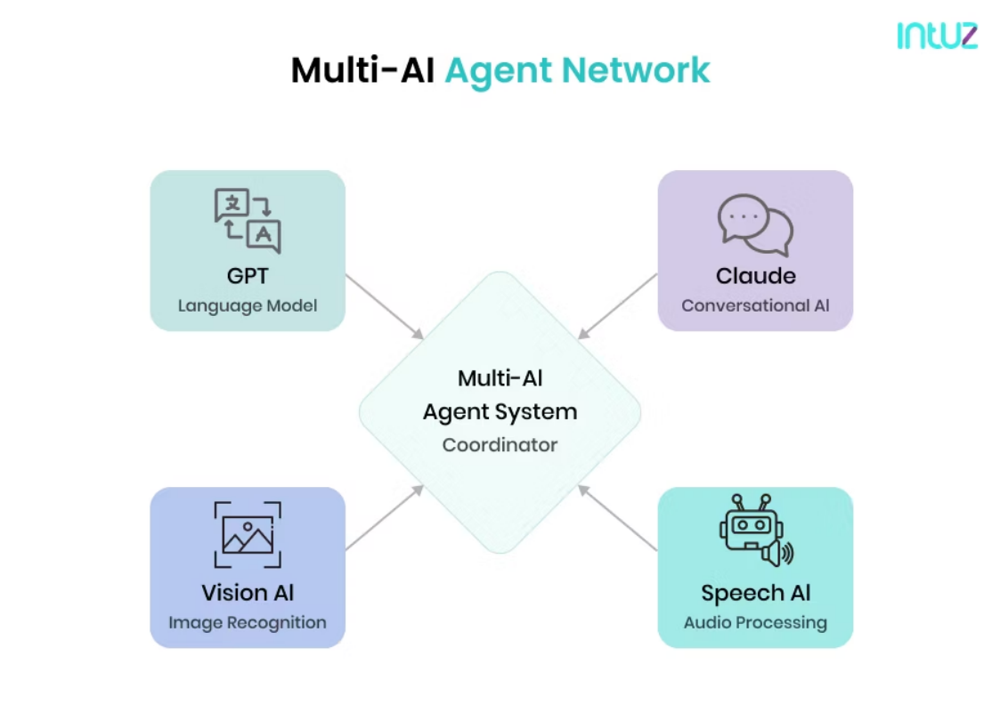

什么是 Multi-Agent
随着 AI Agent 技术的发展，单一 Agent 已经难以应对复杂任务。在许多真实业务场景中，一个任务往 往需要多个能力模块协同完成，例如信息检索、任务规划、代码生成、数据分析以及业务操作等。如 果把所有能力都放在一个 Agent 中，不仅系统复杂度会迅速增加，而且推理过程也会变得难以控制。 因此，越来越多的系统开始采用 Multi-Agent（多智能体）架构。Multi-Agent 的核心思想是：将复杂 任务拆分为多个子任务，并由多个具有不同能力的 Agent 协同完成。每一个 Agent 都负责特定职责， 通过通信和协作机制共同完成整体目标。

在这种架构中，系统不再依赖单一“超级 Agent”，而是由多个角色明确、职责清晰的 Agent 组成一 个协作网络。
Multi-Agent 的基本概念
Multi-Agent 系统最早来源于分布式人工智能（Distributed Artificial Intelligence）领域。在传统 AI 研究中，多智能体系统用于研究多个自主实体如何在共享环境中进行协作、竞争或者协商。 在大模型时代，这一概念被重新激活，并成为构建复杂 AI 系统的重要方法。每一个 Agent 都可以被看 作一个具备以下能力的智能体：
首先是 感知能力。Agent 可以接收来自用户、其他 Agent 或外部系统的信息。 其次是 推理能力。Agent 可以通过大模型进行思考与决策，从而决定下一步行动。 第三是 行动能力。Agent 可以调用工具、访问系统或者向其他 Agent 发送消息。 最后是 协作能力。Agent 能够与其他 Agent 进行通信，共同完成任务。 通过这些能力的组合，多个 Agent 可以形成一个动态协作的智能系统。
Multi-Agent 与单 Agent 的区别
在单 Agent 系统中，所有任务都由同一个 Agent 完成。Agent 需要同时负责任务理解、任务规划、工 具调用以及结果生成。这种方式实现简单，但在复杂任务场景中容易出现问题。例如推理过程过长、 工具调用混乱或者上下文过载。
Multi-Agent 系统则采用分工协作的方式。不同 Agent 负责不同类型的任务，例如： 一个 Agent 负责任务规划
一个 Agent 负责信息检索
一个 Agent 负责代码生成
一个 Agent 负责执行工具
通过这种方式，每个 Agent 的职责更加明确，推理过程也更加可控。同时，不同 Agent 可以并行工 作，从而提高系统效率。 此外，Multi-Agent 架构还具有更好的可扩展性。当系统需要增加新的能力时，只需要新增一个 Agent，而不需要修改整个系统结构。
Multi-Agent 的典型应用场景
Multi-Agent 系统特别适合处理复杂任务或者长流程任务。在这些场景中，任务往往包含多个阶段，并 且每个阶段需要不同能力。
例如在软件开发辅助系统中，一个 Multi-Agent 系统可能包含以下角色：
-
需求分析 Agent
-
系统设计 Agent
-
代码生成 Agent
-
测试 Agent
这些 Agent 通过协作完成完整的软件开发流程。
在企业自动化系统中，Multi-Agent 也可以用于复杂业务处理。例如在客服系统中，可以分别设置问题 理解 Agent、知识检索 Agent、业务处理 Agent 和回复生成 Agent，从而形成完整的服务流程。 在研究领域，Multi-Agent 还被用于模拟复杂社会行为，例如经济系统、协作决策以及智能组织结构
等。
Multi-Agent 的核心价值
Multi-Agent 架构的价值主要体现在三个方面。
首先是 复杂任务分解能力。通过将复杂问题拆分为多个子任务，系统能够更稳定地完成长流程任务。 其次是 系统可扩展性。新增能力时只需要增加新的 Agent，而不需要修改已有结构。 第三是 协作智能。多个 Agent 之间可以互相补充能力，从而形成比单一 Agent 更强的整体智能。 正因为这些优势，Multi-Agent 正逐渐成为构建复杂 AI 系统的重要架构方式。在下一节中，我们将进 一步介绍 Multi-Agent 的典型系统结构，包括分层式架构（Hierarchical Agent）以及群体式架构 （Swarm Agent）。